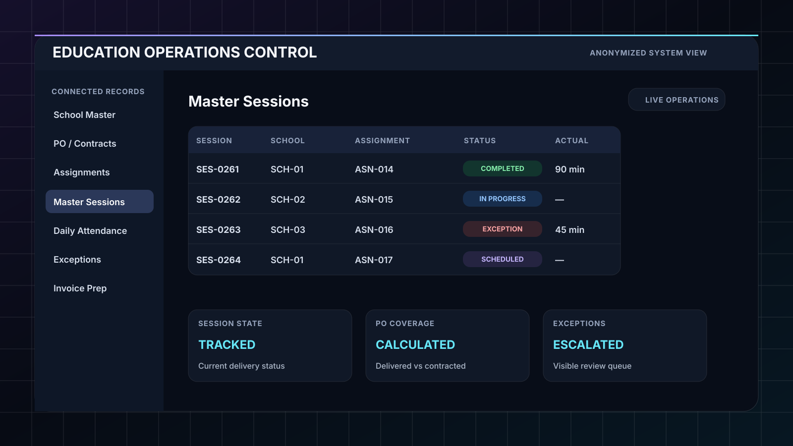

Fragmented operational data
Schools, teachers, assignments, sessions, attendance and contract tracking needed connected records instead of repeated manual entry.
A connected operating model for teacher assignments, scheduled sessions, daily attendance, exceptions, reminders, contract/PO visibility and director-facing operational reporting.

Architecture and automation across the connected operations model.
Schools, teachers, assignments, sessions, attendance and contract tracking needed connected records instead of repeated manual entry.
Clock-in, clock-out, missed events and late attendance needed clear status transitions and escalation rather than silent failure.
The system needed to surface delivered sessions, exceptions, PO usage and operational status without requiring deep ClickUp navigation.
The design avoids duplicating school, teacher and assignment data inside every session record.
Teacher accesses the attendance flow using a session context and teacher identifier.
n8n resolves the correct session and assignment relationships before accepting the event.
Clock-in/out timestamps, actual minutes and attendance status are written to the correct records.
Late, missed or inconsistent states create visible exceptions and director-facing follow-up.
The core improvement was designing the relationships so every reminder, attendance event, exception and report points to the same operational truth.